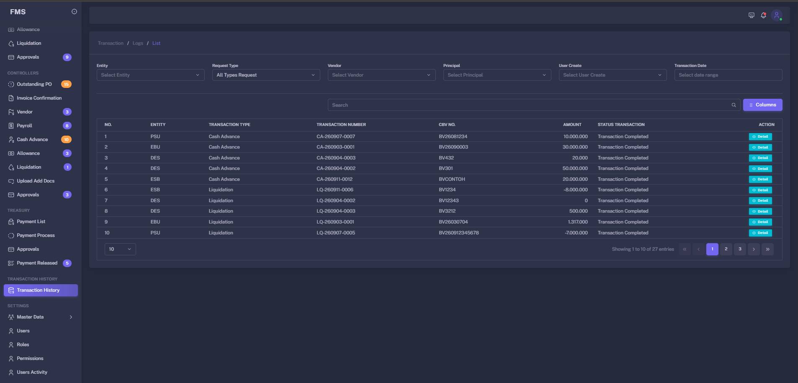
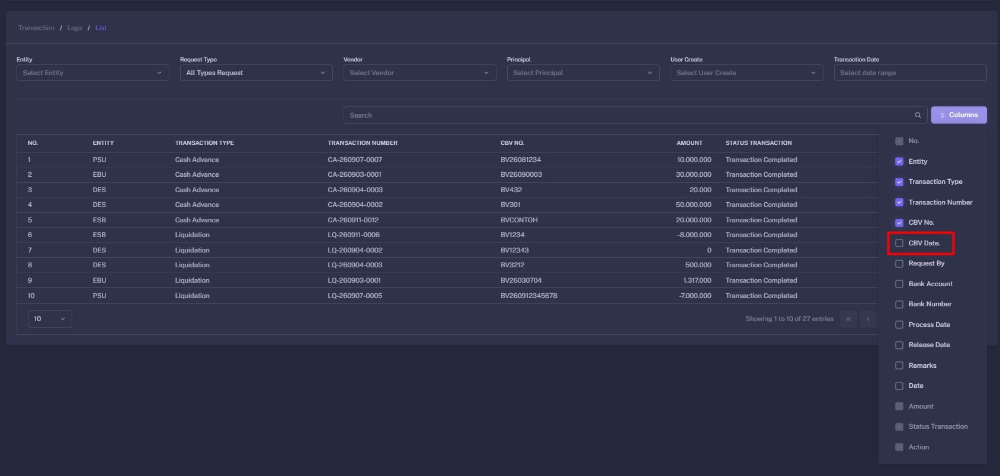
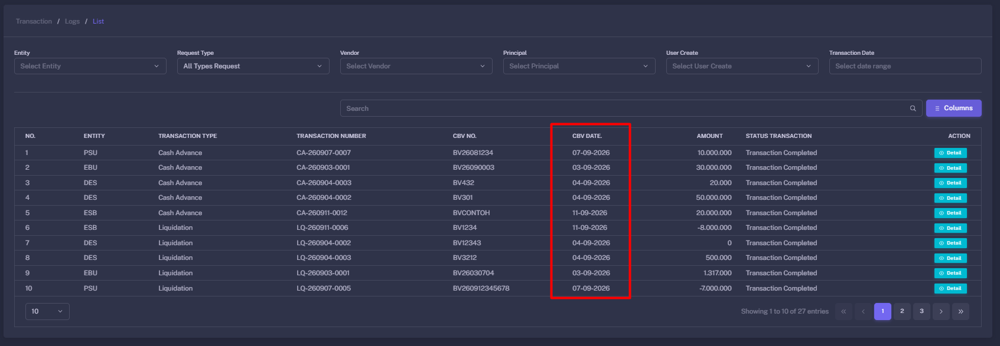
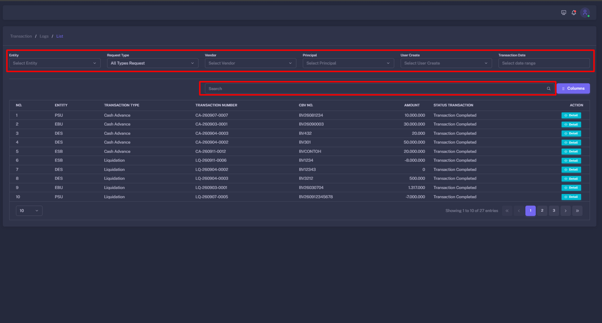
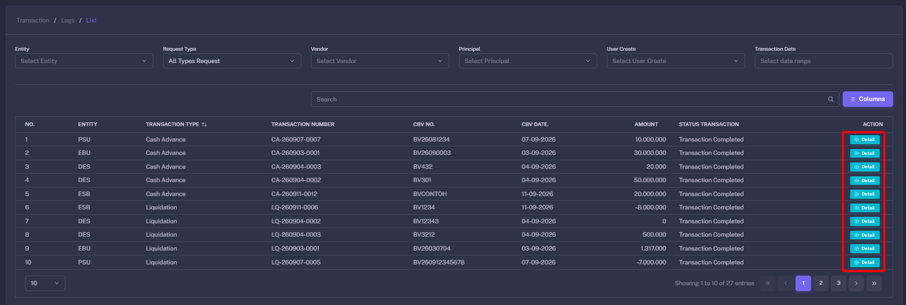
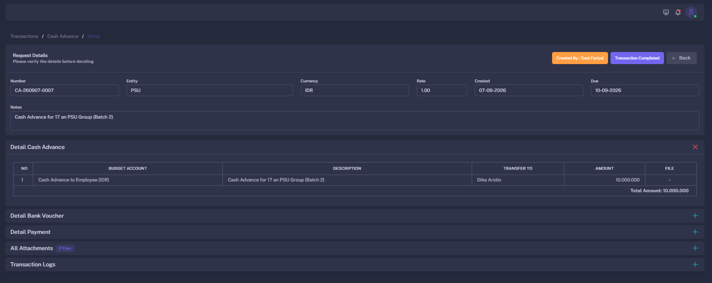

Transaction History Guide
Transaction History provides a complete record of finance transactions, workflow activities, approvals, payment progress, and user actions throughout the Finance Management System.
Transaction History Overview
This page is used to review completed, ongoing, returned, or rejected finance transactions across Operational, Controller, and Treasury.
What can be reviewed
- Purchase Orders and related invoice records.
- Outstanding payments and payment process records.
- Payroll, Cash Advance, Allowance, and Liquidation transactions.
- Approval activities and returned or rejected transactions.
- Payment release details and bank transaction references.
- Supporting documents and user activity logs.
How to access Transaction History
- Open the
Transaction Historymenu from the main navigation. - The system displays a list of transactions based on your role and access permissions.
- Use the available search and filter options to find the required record.
- Click a transaction row to open its detailed history.



The transactions displayed in Transaction History may depend on your assigned role, entity access, department access, and system permissions.
Search and Filter
Use search and filtering tools to locate a transaction quickly and reduce the number of records shown in the history list.
Available filters
How to search for a transaction
- Open
Transaction History. - Enter a keyword, document number, vendor name, or transaction reference in the search field.
- Select a date range if the transaction date is known.
- Choose any additional filters such as status, transaction type, entity, or department.
- Click
Search,Filter, or apply the filter based on the system interface. - Open the matching transaction from the filtered result list.

For faster results, use the most specific identifier available, such as a Purchase Order number, invoice number, payment reference, or unique transaction ID.
Transaction Detail
The transaction detail page contains the main financial information, references, documents, workflow status, and related activity history.
Information commonly available
- Transaction reference number and transaction type.
- Created date, submitted date, and last updated date.
- Vendor, beneficiary, entity, department, vessel, or principal information.
- Amounts, taxes, currency, exchange rate, and payment details.
- Related Purchase Order, invoice, Cash Advance, or liquidation reference.
- Attached documents and approval history.
How to review a transaction detail
- Find the desired transaction from the Transaction History list.
- Click the transaction row or the
View Detailaction. - Review the general information and financial summary.
- Open related records, such as Purchase Order, Invoice, or Payment, when available.
- Review attached documents before making any follow-up decision.
- Check the activity log to understand the full transaction lifecycle.


Transaction History is primarily used for review and traceability. If a transaction is already approved or released, changes may be restricted by the workflow and role permission settings.
Activity Log and Audit Trail
The activity log records important actions performed during the lifecycle of a transaction, including creation, updates, submissions, approvals, returns, and payment release.
Typical activity log information
- The user who performed the action.
- The action type, such as Create, Update, Submit, Approve, Return, Reject, or Release.
- The date and time of the action.
- The transaction status before and after the action.
- Notes, approval comments, or rejection reasons when available.
How to review the activity log
- Open a transaction detail page.
- Find the
Activity Log,Timeline, orApproval Historysection. - Review events from the oldest to the newest action, or use the provided sorting option.
- Read approval, return, or rejection notes carefully.
- Use the activity log as a reference when following up with Operational, Controller, or Treasury users.
Use the audit trail to identify who last updated a transaction, why it was returned or rejected, and which workflow stage is currently pending.
Export History
If enabled in your system, the export function allows users to download filtered transaction history for reporting, reconciliation, or audit purposes.
How to export transaction history
- Open
Transaction History. - Apply the required date range, transaction type, status, vendor, entity, or department filters.
- Review the result list to make sure it contains the expected records.
- Click the
Export,Download, orExport Excelbutton. - Select the format if the system provides multiple options, such as Excel, CSV, or PDF.
- Save the exported file in an approved and secure location.
Exported files may contain confidential financial and vendor information. Store, share, and dispose of exported files according to company data security policies.
Transaction Status Reference
The exact status names may vary by transaction type and workflow configuration, but the following examples describe common statuses.
| Status | Description | Typical Next Action |
|---|---|---|
| Draft | The transaction has been saved but has not been submitted into the workflow. | The creator completes the required data and submits the transaction. |
| Submitted | The transaction has entered the workflow and is waiting for review or approval. | The assigned reviewer, Controller, or approver reviews the transaction. |
| On Review | The transaction is being reviewed, validated, or prepared for payment. | The responsible team completes the review and sends it to the next workflow stage. |
| Returned / Rejected | The transaction requires correction or has been rejected. | The requester reviews the note, corrects the issue, and resubmits when permitted. |
| Approved | The transaction has received the required approval and may proceed. | The transaction proceeds to the next stage, such as Treasury payment processing. |
| Released / Paid | The payment has been released or recorded as completed. | Review the bank reference and retain the record for reconciliation or audit. |
Audit and Review Tips
Follow these practices when using Transaction History for monitoring, reconciliation, compliance review, or audit support.
When reporting a transaction issue, include the transaction reference, current status, relevant dates, the action history, and screenshots or supporting evidence whenever possible.